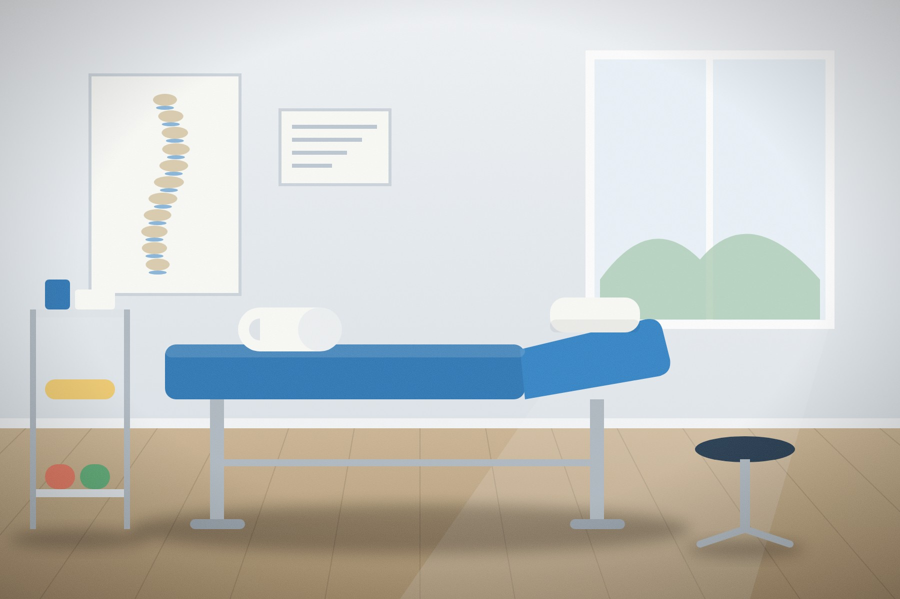
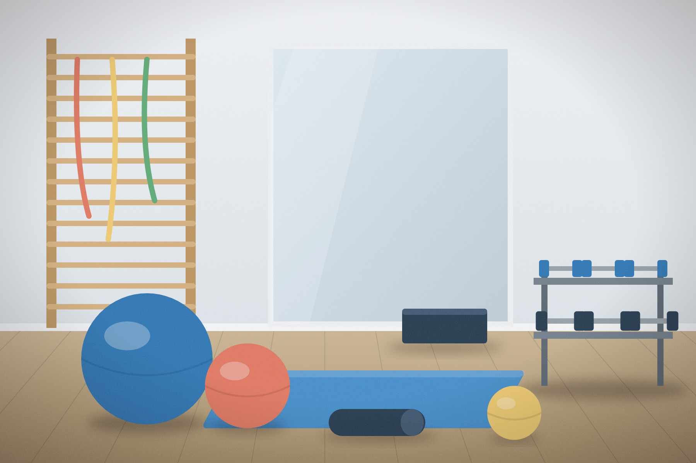
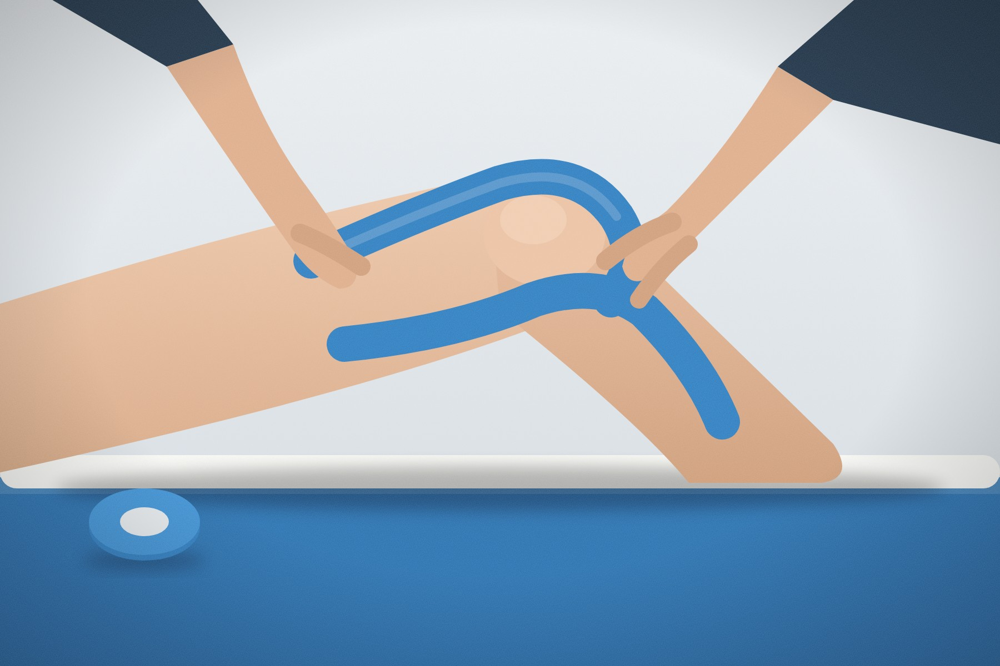

Expert hands-on treatment for back pain, sports injuries and recovery after surgery, in the centre of Tarnford.
Kestrel is an independent physiotherapy clinic run by three chartered physiotherapists. We opened in 2012 in the Old Maltings on Brewery Lane and treat everyone from club runners and weekend gardeners to people getting back on their feet after a hip or knee replacement. Your first appointment is 45 minutes, so there is time to listen properly, examine you and start treatment on the same day.
From sprained ankles to runner's knee, with a clear plan for getting back to sport.
Read more »Structured rehabilitation after joint replacement, ligament repair or spinal surgery.
Read more »Small classes of six, taught by a physiotherapist, on Tuesday and Thursday evenings.
Read more »

A small gym for your exercises, so we can check your technique before you go home.
View details
"I could not put my socks on in January. Ruth had me running the Tarnford 10K in May. She explained everything and never once made me feel daft for asking."Tom R, Tarnford Harriers
"After my knee replacement the hospital gave me a sheet of exercises and that was that. Dan saw me twice a week for six weeks and I am back on the allotment."
Margaret H
"The Thursday Pilates class has done more for my back than ten years of painkillers. Marta notices everything."
Colin P
Call us on 01632 960388 or email hello@kestrelphysio.example and we will find you an appointment, usually within two working days.
Get In Touch